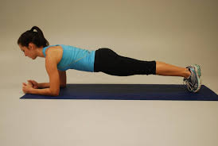

Here's your fitness routine
Let's work week by week
1 . SQUATS are one of the most foundational functional movements in our lives
- Stand with your feet slightly wider than your hips. Your toes should be pointed slightly outward – about 5 to 20 degrees outward (the wider your stance, the more you’ll want to rotate your feet outward).
- Look straight ahead and pick a spot on the wall in front of you. Look at this spot the entire time you squat, not looking down at the floor or up at the ceiling.
- Put your arms straight out in front of you, parallel to the ground. Your weight is on your feet – it should be on the heels and the balls of your feet
- Breathe deeply into your stomach, break at your hip and push your butt back.
- Squat down until your hip joint is lower than your knees. As you squat down, focus on keeping your knees in line with your feet.
- Drive your knees outward (away from each other) the same way you did on the way down
2 . Skipping not only strengthens your core and legs but also helps with weight-loss and cardio health.
- Start with your hands in the "ready" position. Grip the handles loosely with your fingers, not your palms.
- Practice a toe catch. Place the rope behind you and turn the jump rope over your head. Catch the jump rope under your toes and lift up your heels and let it out from underneath your feet. Repeat this movements until you become comfortable
- Pretend jump. Jumping rope is all about timing the turn of the rope with your jump. Try taking an imaginary jump rope and pretending to turn it over your head and jump rope with it.
- Now it’s time to try with a real jump rope. Be patient with yourself and go slow.
- Start with 1 set of 30-40 reps.
3 .The plank is a full-body exercise that targets your core. It also strengthens your arms, shoulders, back, glutes, and legs.
- Start on all fours, with your hands below your shoulders and your knees below your hips.
- Straighten your legs behind you, keeping your feet hip-width apart. Tighten your core.
- Hold for 10–30 seconds.
To make this exercise easier, place your knees on the floor.
1 . The Supine Toe Tap is a basic Pilates exercise. It engages your core muscles while working your glutes, hips, and legs. Toe taps also place minimal pressure on your spine. If you have back pain, toe taps may be an ideal alternative to crunches.
- Start on your back. Lift your legs, knees bent to 90 degrees. Place your hands at your sides, palms down.
- Tighten your core. Lower your right foot and gently tap the floor, keeping your left leg still and your back flat
- Raise your right leg to return to the starting position. Repeat with your left leg.
- Start with 1 set of 8–12 reps

Keep doing this along with the set of workouts from week 1
This intermediate exercise combines a plank with knee movements, so it’s an excellent move for balance and core strength.
- Start in a plank with your hands below your shoulders. Tighten your core.
- Lift your right knee toward your chest, keeping your back straight and hips down.
- Return your right leg to the starting position as you simultaneously lift your left knee toward your chest.
- Continue alternating legs. Start with 1 set of 8–12 reps.